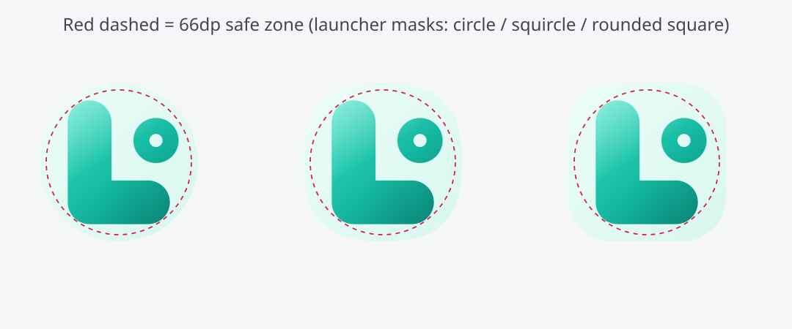
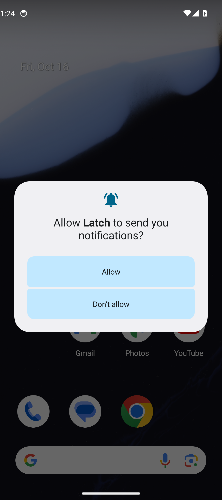
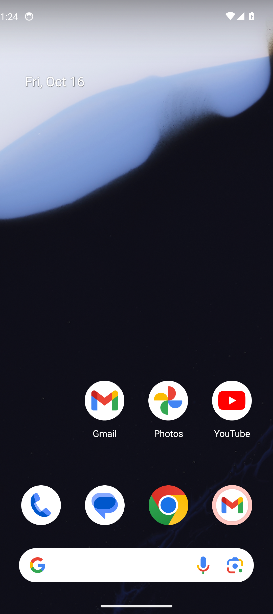
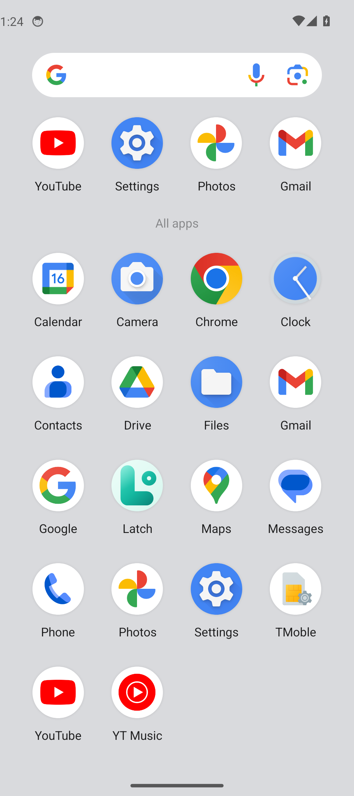
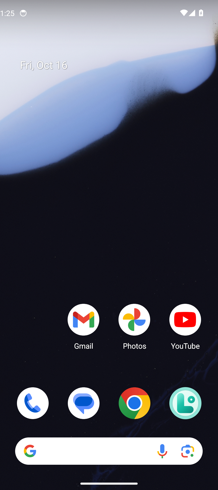

Latch
Privacy-first Android automation — local if/then rules, no cloud, no trackers. Optional Shizuku / root.
Screenshots
Captured on Android emulator API 34 · 1080×2424 (Pixel 9 class) via Latch-Screenshots CI.




Features
- Sticky monitor + watchdog so rules keep running
- Profiles (Home / Work / Sleep), variables (%battery, %ssid…)
- Light / dark / system theme + seed colors + AMOLED
- Import/export recipes · Why-didn’t-fire log · quick templates
Related: Fern system monitor